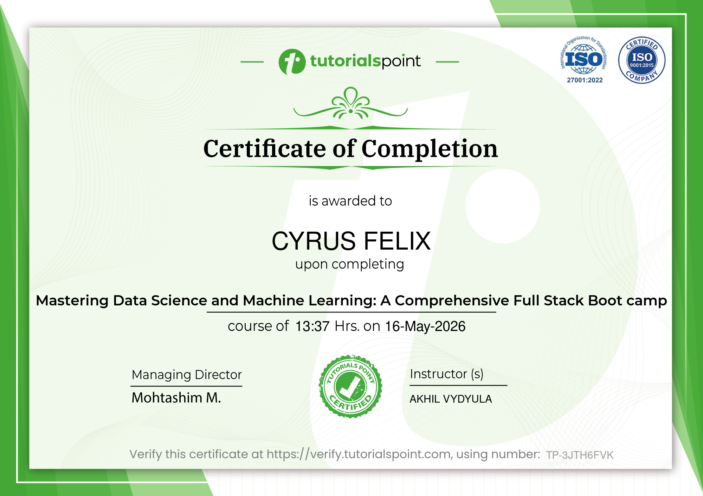

Programming
Building logic and practical programming foundations.
OPEN TO INTERNSHIPS & COLLABORATION
A third-year IT student and aspiring developer exploring software, the cloud, and thoughtful ways to solve everyday problems.
01 / GET TO KNOW ME
Learning how technology works and how to make it work better for people.
MY APPROACHI'm a third-year Information Technology student interested in software development and cloud technologies. I enjoy turning ideas into useful projects, learning how systems fit together, and improving through hands-on practice.
I'm building a strong foundation in programming, web development, databases, and cloud tools, and I'm looking for opportunities to learn from a team and contribute thoughtfully.
02 / WHAT I'M LEARNING
A snapshot of technologies and strengths I'm developing through coursework and sample projects.
Building logic and practical programming foundations.
Creating responsive, accessible web experiences.
Modeling data and writing useful queries.
Exploring cloud fundamentals and deployment workflows.
Learning to prepare data and explore applied AI.
Planning clear interfaces and keeping work organized.
Breaking complex tasks into clear, testable steps.
Collaborating, documenting, and sharing ideas clearly.
03 / SELECTED WORK
A cafe management web app for organizing products, inventory, sales, and reports.
A cafe management app for tracking products, ingredients, stock, sales, and reports.
View repository04 / LEARNING & RECOGNITION
Certificates from my learning journey. Select a preview to open the original image.

TESDA training certificate in the Programming (Java) NC III qualification.

Certificate of completion for the Mastering Data Science and Machine Learning course.

Course certificate from Cisco Networking Academy in collaboration with OpenEDG JavaScript Institute.

Certificate of completion for an introductory course in project management.

Course certificate recognizing completed SQL project work.

Course certificate covering introductory SQL and database concepts.

Course certificate in applying SQL to data science and analysis workflows.
05 / GROWTH & LEADERSHIP
Ways I have practiced collaboration, support, and responsibility through academic and technical work.
Coursework and group assignments
Worked with classmates on assignments, presentations, and technical exercises that called for planning, communication, and shared accountability.
Programming, web design, and systems topics
Helped classmates work through technical concepts by explaining steps clearly and encouraging practical, hands-on learning.
Collaborative academic activities
Contributed to team-based work by organizing tasks, clarifying responsibilities, and helping keep shared progress on track.
This section reflects the academic collaboration, peer support, and project coordination details previously included in the portfolio.
06 / LET'S CONNECT
I'm always glad to connect with people who care about building useful technology. Reach out about an internship, a collaboration, or just to say hello.